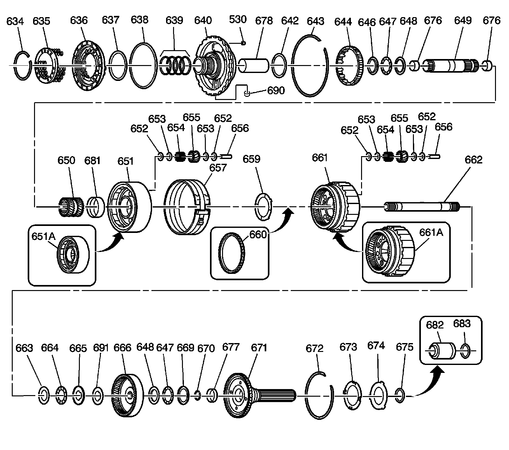

Center Support and Gear Unit Assembly
Disassembled Views
Center Support and Gear Unit Assembly:

530 - Intermediate Clutch Orifice
634 - Intermediate Clutch Spring Retainer Ring
635 - Intermediate Clutch Spring Assembly
636 - Intermediate Clutch Piston
637 - Intermediate Clutch Piston Inner Seal
638 - Intermediate Clutch Piston Outer Seal
639 - Direct Clutch Housing Oil Seal Ring
640 - Center Support Assembly
642 - Reaction Carrier Thrust Washer
643 - Center Support Spacer
644 - Low Clutch Roller Assembly
646 - Sun Gear Front Thrust Bearing Race
647 - Sun Gear Front/Rear Internal Gear Thrust Bearing Assembly
647 - Sun Gear Front/Rear Internal Gear Thrust Bearing Assembly
648 - Sun Gear Front Thrust Bearing Race
648 - Sun Gear Front Thrust Bearing Race
649 - Sun Gear Shaft Assembly
650 - Sun Gear
651 - Reaction Carrier Assembly (4 Pinion)
651a - Reaction Carrier Assembly (5 Pinion)
652 - Reaction Carrier Pinion Gear Thrust Washer (Bronze)
652 - Reaction Carrier Pinion Gear Thrust Washer (Bronze)
652 - Reaction Carrier Pinion Gear Thrust Washer (Bronze)
652 - Reaction Carrier Pinion Gear Thrust Washer (Bronze)
653 - Reaction Carrier Pinion Gear Thrust Washer (Steel)
653 - Reaction Carrier Pinion Gear Thrust Washer (Steel)
653 - Reaction Carrier Pinion Gear Thrust Washer (Steel)
653 - Reaction Carrier Pinion Gear Thrust Washer (Steel)
654 - Reaction Carrier Pinion Gear Roller Bearing Roller
654 - Reaction Carrier Pinion Gear Roller Bearing
655 - Reaction Carrier Pinion Gear
655 - Reaction Carrier Pinion Gear
656 - Reaction Carrier Pinion Gear Pin
656 - Reaction Carrier Pinion Gear Pin
657 - Low and Reverse Band Assembly
659 - Output Carrier Thrust Washer
660 - Vehicle Speed Sensor Reluctor Ring
661 - Output Carrier Assembly (4 Pinion)
661a - Output Carrier Assembly (5 Pinion)
662 - Main Shaft
663 - Sun Gear Rear Thrust Bearing Race
664 - Sun Gear Rear Thrust Bearing Assembly
665 - Sun Gear Rear Thrust Bearing Race
666 - Rear Internal Gear
669 - Rear Internal Gear Thrust Bearing Race
670 - Main Shaft Retainer Ring
671 - Output Shaft Assembly
672 - Output Shaft Retainer Ring
673 - Output Shaft Thrust Washer
674 - Selective Thrust Washer
675 - Output Shaft Seal
676 - Main Shaft Bushing
676 - Main Shaft Bushing
677 - Rear Internal Gear Bushing
678 - Center Support Oil Passage Sleeve
681 - Reaction Carrier Bushing
682 - Transmission Output Shaft Yoke Seal Sleeve
683 - Output Shaft Seal
690 - Center Support Oil Cooler Pipe Fitting Seal
691 - Rear Internal Gear Thrust Washer